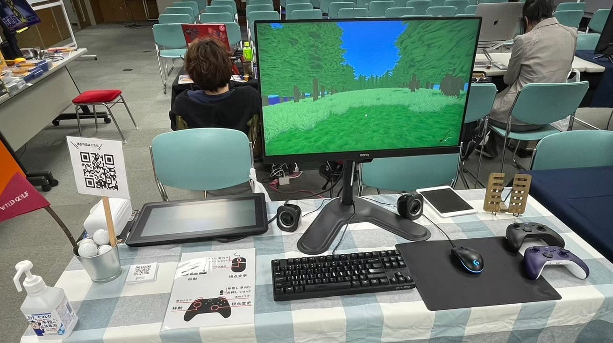

整備されていない自然のゴルフコースでゴルフを行います。打ったボールは草を刈って探す必要があり、最後まで自分でボールを管理しなくてはなりません。ボールを打つ前に草や木を切って、打ちやすくするのも自由で、好きな方法で攻略ができます。
C++とOpenGL3を使用して、ほぼフルスクラッチで開発に挑戦しました。ゲーム内にはDear ImGuiを使いコースエディタを実装し、外部のエディタなどを使わずにコースを作れるツールにもなっています。
2024年3月に仙台であったインディゲームマーケット4に参加して展示しました。初のイベント参加だったので思い入れのある作品です。会場では、こどもたちに人気で、たくさん遊んでいただけました。
テキストで表記するデータフォーマットのシングルヘッダパーサーです。ini形式に似ていますが配列とテーブルの定義が可能で、配列やテーブルを入れ子にすることも可能です。
このパーサはゲーム制作中にシンプルに表記できるデータフォーマットが欲しくなり制作しました。個人的にini形式が好きなのでini形式の拡張をした感じになりました。
// プレイヤーの設定
name = "sam"
age = 22
weapons = {"sword", "axe", "gun"}
stats = {
health = 120,
power = 30,
luck = 15,
}
ピッチャーが投げてくる球を打ち返して倒していく2Dゲームです。RaylibというC言語で開発されたライブラリのゲームジャムに参加し作った作品で、審査員特別賞をいただきました。
開発はC言語でおこない、emscriptenでwasmにコンパイルしウェブ上で遊べるように公開しています。この作品はC言語でつくりましたが、作品の小ささもあり開発がとても楽しくできました。
C99には指示初期化子があり、player = (Player){.health = 100, .power = 3.2f} のように指定した値を任意値で初期化し、指定してない物は0で初期化されます。これがとても強力で、敵のバリエーションを指示初期化子で簡単に作ることができました。 C++ではC++20から指示初期化子が使えるのですが、構造体のメンバ定義順に指示初期化子を書かなければならず、メンバの定義順を覚えておく必要があるので別物です。
旅客機を操作し安全に乗客を飛行場まで届けるゲームです。しかし航空交通が整備されていないため、空は飛行機が縦横無尽に飛び交っています。できるだけ事故を起こさずに飛んでください。
ゲームのテンポを良くするため離着陸を増やしたいと思いましたが、それには飛行場同士の距離を短くすることでした。飛行場の数は事前に決まっていたため、惑星のモデルを小さく作り飛行場をバランスよく配置しました。しかし小さな惑星を飛行機が飛んでいる感じがして迫力がありません。そこでジオメトリシェーダを使い自機周辺の地形を膨張させることで、実際の形状より大きな惑星を飛んでいるように感じられました。
ロードバイクの大会で最下位から1位を目指すレースゲームで、周りの選手を蹴り飛ばしてクラッシュをさせることで優位に順位をあげることができます。コースは自動生成にすることで、何度挑戦しても楽しめるようになっています。
itch.ioで2016年に公開し、現在までに18万ダウンロードされました。
7Day FPSという7日間でFPSを作るゲームジャムに参加して作った作品です。ガソリンスタンドの店員になって大量にくるお客さんの車にガソリンを入れるゲームです。物理エンジンベースで動いているので挙動が不安定なのですが、プレイヤーにそれが面白かったようでたくさん遊んでいただけました。
2015年、当時世界一位だったYoutuberのPewDiePie氏が、このゲームプレイ動画を公開したことをきっかけに流行り、現在では3万ダウンロードしていただきました。また、このおかげで私は地獄のインディゲーム開発沼にはまっていってしまうのです。